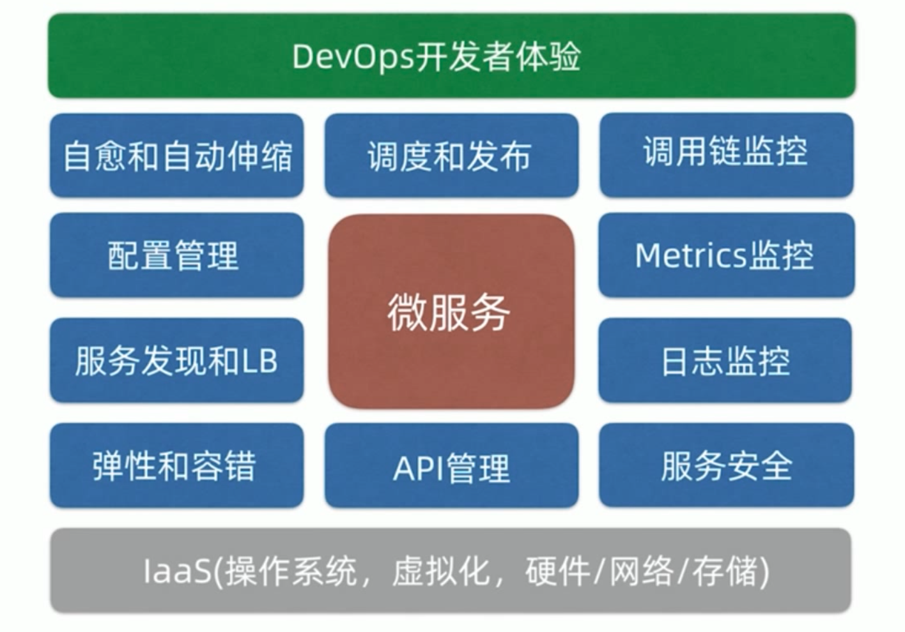

[TOC]
软件工程全生命周期工具：
质效提升
项目管理
- jira+confluence需求分析、任务分配、风险管控、bug追踪、文档管理、积累复盘
开发
- API管理：yapi
- 自动化测试：
- 配置管理：nacos
- 服务发现：nacos
- 负载均衡、容错：nginx、gateway、ribbon、hystrix
- 安全与认证：oAuth2、keycloak、spring security
CI/CD
- 持续集成：git、maven、docker、jenkins
- 持续交付: docker-compose、docker swarm、k8s（rancher+helm）
- 制品库：jcr+
运维
refrence
1.https://www.kubernetes.org.cn/9711.html
2.

我们需要devOps做什么？
研发效能提升。让开发更专注于开发。减少测试部署时诸如环境配置、参数等不必要的问题及沟通。
为什么要选择统一化的CI/CD?
https://www.toutiao.com/article/6779098800825827852/
CI：1. 利用k12代码中的jenkins脚本(只有CI，需改造) 2. maven插件，自动化程度低，需打开本地docker，再执行任务
CD: 自写jenkins脚本
1. docker-compose是每次都上传？若不是，怎么判断更改过了
1. docker-compose外界传入参数，如镜像库地址等，动态生成改变
我们要做什么？
符合开发场景的最佳实践。
变量配置
- jar 启动所必须配置，本地bootstrap.yml,application.yml,远端nacos上配置,外部环境变量
- 单个服务，如服务名端口等配置由每个模块Pom定义，后编译进yaml
- mvn命令传递进pom的参数
- jenkinsFile传递进mvn命令的参数
- jenkinsFile传递进dockerFile的参数
- dockerFile传递进java - jar的参数
变量
- 环境变量，mvn、jar、docker运行时都可读取，dockerCompose可提供，nacos中的yaml也可以用
- 命令行传入的
- 各个文件定义的
文件
- jenkinsFile
- CI
- 镜像 dockerFile
- jar pom.xml yaml
- CD
- dockerCompose
- helm
- CI
- https://www.jianshu.com/p/a471d859051a
- https://blog.csdn.net/fuck487/article/details/75104765
优先级
应该尽量放在最外部，只有不通用的才放在尽可能高的层
k12
- cloud模块dockerCompose中的变量，从.env统一读取，供nacos中的yaml和bootstrap.yml使用
- edge模块的dockerCompose，一种也是直接给springboot的yaml使用，一种是JAVA_OPTS，通过dockerFile传入ENV传入ENTRYPOINT，供java -jar使用